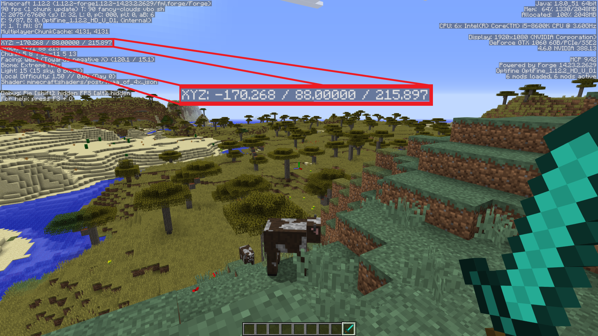

Load the PiCraft package on the Julia console:
using PiCraftOn load, the library will attempt to connect to a running Minecraft world on localhost. If Minecraft is not running, an error message will be printed. Subsequently, once Minecraft has been started, a connection can be forced by calling connectToWorld()
You can save and restore your progress using the commands:
- Save:
save() - Load last savepoint:
restore()
A 3-D coordinate system is used to describe the Minecraft world. Throughout this package we describe a set of coordinates using a Tuple of numbers, for example (3.5, 19, 7) describes a position in the Minecraft World. The 2nd attribute of the Tuple describes the y-axis or height. When in game it is convenient to find the player coordinates by opening the debug menu.

Player
You can find and set your player's location:
- Find Player position:
getPos()- Returns a
Tuple{Float64, Float64, Float64}which contains the player's current coordinates.
- Returns a
- Set Player position:
setPos(pos::Tuple{Float64, Float64, Float64})- Teleports the player to the specified coordinates.
Blocks
Blocks are the heart of Minecraft. The package provides the ability to modify blocks at specified coordinates. Block is an immutable datatype defined in src/blocks.jl.
immutable Block
id::Int
data::Int
endThe id defines the type of block (like cobblestone, wool, wood,.etc) and the data attribute defines additional characteristics of the block, on default every block has it data set to 0. For example, Wool's block id is 35, Block(35,0) refers to a block of white wool. Different wool colors can be accessed by changing the data attribute. Red Wool is Block(35, 14), Pink Wool is Block(35,6) and so on. A complete reference can be found in the documentation.
- Place Block:
setBlock(Tuple{Int,Int,Int}, block::Block)- Place the specified Block at the specified coordinates.
- Place Blocks:
setBlocks(p1::Tuple{Real, Real, Real}, p2::Tuple{Real, Real, Real}, block::Block)- Set an entire region to the specified block type defined by the corners
p1andp2.
- Set an entire region to the specified block type defined by the corners
- Get Block information:
getBlock(Tuple{Int,Int,Int})- Returns the block present at the specified coordinates.
While the getBlock and setBlock functions will accept Float64 as arguments but these will be rounded to Int as a block cannot be placed on non-integer coordinates.
Models
A model is a 3-D Array of Blocks. Whenever we refer to a model we more specifically mean Array{Block, 3}. Storing a model can be convenient way to write scripts. For example if we have a streetlight stored as a model we can easily write a script to copy and paste at equal intervals on a street. There are model manipulation functions available such as:
- Copy Model:
copyModel(p1::Tuple{Real, Real, Real}, p2::Tuple{Real, Real, Real})- Copy the Blocks between the diagonally opposite blocks and store in a 3-D Block Array.
- Cut Model:
cutModel(p1::Tuple{Real, Real, Real}, p2::Tuple{Real, Real, Real}, block::Block)- Copy blocks between diagonally opposite blocks and fill the space with
block.
- Copy blocks between diagonally opposite blocks and fill the space with
- Flip Model:
flip(A::Array{Block, 3}, dim::Symbol)- Flip a Block Array in a particular dimension. Dimensions are
x,yandz
- Flip a Block Array in a particular dimension. Dimensions are
- Rotate Model